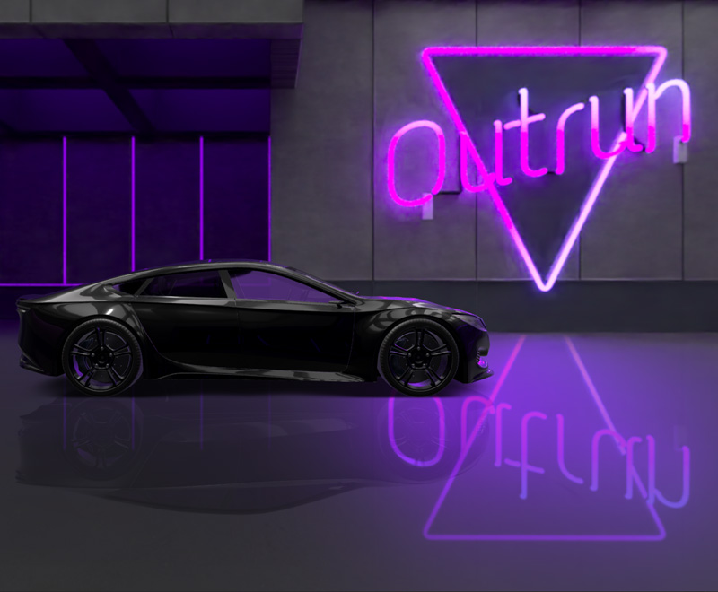
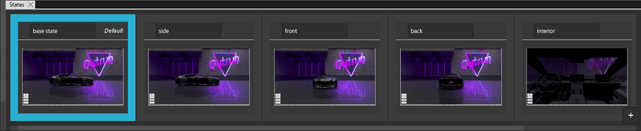
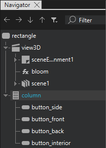
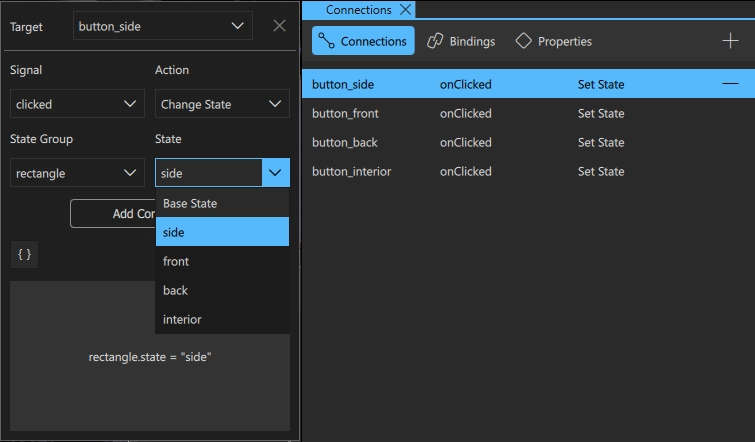
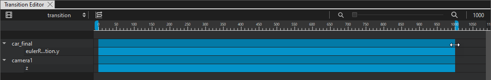

Animated State Transitions

The Animated State Transitions tutorial illustrates how you can animate the transition between states.
The starting point of this tutorial is the Car Demo project, you can download it from here.
You can download the completed project from here.
This tutorial requires that you know the basics of Qt Design Studio, see Getting Started.
Tutorial Assets
All assets you need for this tutorial are included in the Car Demo project.
Running the Tutorial Project
To open the tutorial project in Qt Design Studio, open the .qmlproject file located in the root folder of the downloaded project.
Creating States
First, you create the different states. In this tutorial, you create four different states with different views of the car in the scene:
- Side view
- Front view
- Back view
- Interior view
To create the first state:
- In the States view, select
 .
. - Change the name of the new state to side.
For the side state, you do not need to make any changes to the car model because it is already in side view position.
Next, create the rest of the states and change the rotation of the car. For the interior state, you also change the position of the camera:
- Create a new state and change the name to front.
- In Navigator, select car_final and in Properties, set Transform > Rotation > Y to 0.
- Create a new state and change the name to back.
- In Navigator, select car_final and in Properties, set Transform > Rotation > Y to 180.
- Create a new state and change the name to interior.
- In Navigator, select camera1 and in Properties, set Transform > Translation > Z to 20.

Creating State Transitions
With the states created, you need a way to move between the states in the UI. In this tutorial, you create buttons arranged in a column to do this.
Note: Ensure that you have the base state selected before you add the buttons.
To add the buttons:
- From Components, drag Column to rectangle in Navigator.
- In Navigator, select column and in Properties, set:
- Size > H to 200.
- Spacing to 10.
- In Properties, go to the Layout tab.
- Select Anchors > Bottom and set:
- Target to parent.
- Margin to 10.
- Select Anchors > Left and set:
- Target to parent.
- Margin to 10.
- From Components, drag Button to column in Navigator.
- In Navigator, select button and set ID to button_side.
- On the Button tab, set Text to Side.
- Repeat step 6 to 8 three times to create a total of four buttons. Set the ID for the three last buttons to button_front, button_back, and button_interior. Change the text on the buttons accordingly.

Now, you add the actions to the buttons. Actions determine what happens when you select a button in the application. In this tutorial, you use the buttons to switch between the different states.
To add actions:
- Go to the Connections view.
- In Navigator, select button_side and in Connections, select the button to open the connection setup options.
- Set Signal to
clicked, Action toChange State, State Group torectangleand State tosidein the respective drop-down menus. - Select the
 button to close the connection setup options.
button to close the connection setup options. - Repeat steps 2 to 4 for the next three buttons and set them to go to their corresponding states.

Now you can preview and try the transitions to see how the UI moves between the states when you select the buttons.
To preview, select Alt + P.
Animating State Transitions
The final step of this tutorial is to create animations between the states:
- Go to Transitions.
- Select .
- In the upper right corner of Transitions, change the number 2000 to 1000. This sets the length of the animation in milliseconds.
- Drag the left end of the timebar for car_final to the 0 mark in the timeline, and then drag the right end to the 1000 mark.
- Repeat the above step for camera1.

This adds the transition and sets the animation durations to 1 second (1000 ms). By default, all properties that have changed between the states are added to the transition and therefor animated. In this case, the properties are Y rotation for the car model and Z position for the camera.
Previewing
Now you are done. To preview and try the transitions animations, select Alt + P.
See also States, Transitions, and Working with States.